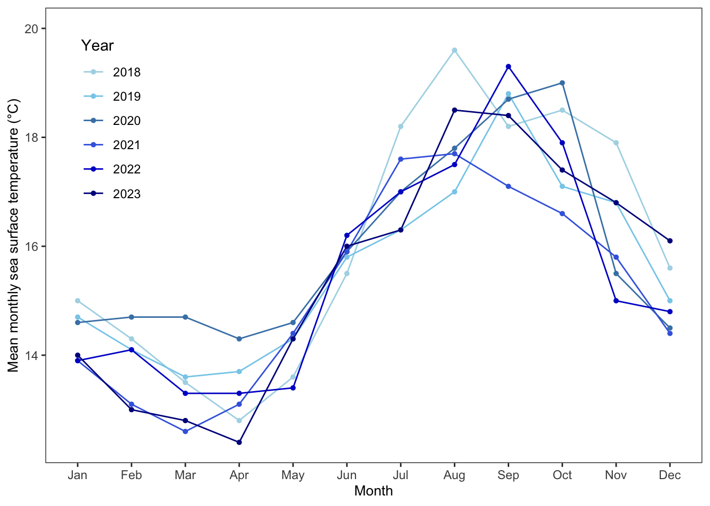

# Reading in Packages
library(tidyverse) # general use
library(gt) # creating summary tables
library(janitor) # cleaning data frames
library(here) # file organization
library(readxl) # reading excel files
library(dplyr)
library(tidyr)
library(ggeffects) # getting model predictions
library(MuMIn) # model selection
library(fs) # fs::dir_tree(path = ".", recurse = TRUE) in console to get file structure
# reading in datasets
sst <- read.csv(here("data", "SST_update.csv"))
nest_boxes <- read.csv(here("data", "occdist.csv"))ENVS-193DS_spring-2025_final
link to GitHub repository: https://github.com/ethan-mathews24/ENVS-193DS_spring-2025_final
Problem 1. Research writing
a. Transparent statistical methods
b. More information needed
c. Suggestions for rewriting
Problem 2. Data Visualization
a. Cleaning and summarizing
sst_clean <- sst |> # starting dataframe
select(date, temp) |> # selecting only the necessary columns
mutate( # creating new columns using the mutate function
year = year(date), # new column name that is populated with the year by using lubridate package to pull only the year from the date column
month = month(date, # new column name that is populated with the month by using the lubridate package
label = TRUE, #returning the month as a factor instead of a numerical value
abbr = TRUE) # returning the abbreviated month name instead of the full name
) |>
filter(year %in% c(2018, 2019, 2020, 2021, 2022, 2023)) |> # using the filter function to only select the desired years that we want to plot, also reducing processing load
select(-date) |> # removing the original date column
group_by(year, month) |> # grouping by year and month
summarize(mean_monthly_sst = mean(temp, na.rm = TRUE), # calculating the mean of the surface temp
.groups = "drop") |>
mutate(
mean_monthly_sst = round(mean_monthly_sst, 1), # rounding the mean_monthly_sst to one decimal place
year = as.factor(year)) # making sure the years are seen as a factorsst_clean |>
slice_sample(n = 5)# A tibble: 5 × 3
year month mean_monthly_sst
<fct> <ord> <dbl>
1 2019 Dec 15
2 2018 May 13.6
3 2018 Mar 13.5
4 2021 Nov 15.8
5 2023 Mar 12.8str(sst_clean)tibble [72 × 3] (S3: tbl_df/tbl/data.frame)
$ year : Factor w/ 6 levels "2018","2019",..: 1 1 1 1 1 1 1 1 1 1 ...
$ month : Ord.factor w/ 12 levels "Jan"<"Feb"<"Mar"<..: 1 2 3 4 5 6 7 8 9 10 ...
$ mean_monthly_sst: num [1:72] 15 14.3 13.5 12.8 13.6 15.5 18.2 19.6 18.2 18.5 ...b. Visualize the data
ggplot(data = sst_clean, # using cleaned dataframe
aes(x = month, # assigning the x-axis
y = mean_monthly_sst, # assigning the y-axis
color = year, # coloring by years
group = year)) + # grouping by years
# first layer: line
geom_line(linewidth = 0.5) + # customizing the line width
# seoond layer: points
geom_point(size = 1.1) + # customizing the point size
scale_color_manual(values = c(
"2018" = "#add8e6",
"2019" = "#87ceeb",
"2020" = "#4682b4",
"2021" = "#4169e1",
"2022" = "#0000cd",
"2023" = "#00008b")) + # manually adding colors to the different years
labs(x = "Month", # changing the x-axis title
y = "Mean monthly sea surface temperature (°C)", # changing the y-axis title
color = "Year") + # changing the title of the legend
theme_bw() + # base theme to add a line to the border
scale_y_continuous(limits = c(NA, 20)) + # making 20 to be the upper limit of the y-axis
theme(panel.background = element_rect(fill = "white"), # changing the background color
panel.grid.major = element_line(color = NA), # removing the color to the grid lines
panel.grid.minor = element_line(color = NA), # removing the color to the grid lines
axis.title.x = element_text(size = 10), # changing size of x axis title
axis.title.y = element_text(size = 10), # changing size of y axis title
legend.position = "inside", # moving the legend to be inside of the figure
legend.position.inside = c(0.1, 0.75) # changing the position of the legend to be inside the graph by treating it as (x,y) coordinates
)
Problem 3. Data Analysis
a. Response variable
The 1s and 0s in this dataset are binary representations of whether a particular nest box observation was occupied by a specific species or was empty. For each occupancy type (Swift Parrot, Common Starling, Tree Martin, or empty), a 1 means that category was present in that observation, while a 0 means it was not.”
b. Purpose of study
The Swift Parrots are the critically endangered target species for conservation efforts with these nest boxes, whereas Common Starlings and Tree Martins are competitor species that also use these boxes but can outcompete or displace the Swift Parrots. While the Swift Parrots are at imminent risk of extinction due to deforestation and the introduction of predators, the other species are more adaptable and, if not managed properly, can exploit the new habitat resources provided by the boxes.
c. Difference in “seasons”
The authors compared the years 2016 and 2019, as the Swift Parrots were absent from the site during the interval between the two years. These studies were conducted in November and December, which are ideal months for observing nesting activity: the fledging period for Common Starlings, mid-incubation and mid-nestling period for Swift Parrots, and nest building and incubation for Tree Martins.
d. Table of models
| Model number | season | distance to forest edge | Predictor list |
|:------------:|:------:|:-----------------------:|:-----------------------------|
| 0 | | | no predictors (null model) |
| 1 | X | X | all predictors (full model) |
| 2 | X | | season |
| 3 | | X | distance to forest edge |e. Run the models
f. Check the diagnostics
g. Select the best model
h. Visualize the model predictions
i. Write a caption for your figure
j. Calculate model predictions
k. Interpret the results
Problem 4. Affective and exploratory visualizations
a. Comparing visualizations
How are the visualizations different from each other in the way you have represented your data?
The visualizations differ because in Homework 2, I simply categorized the workouts as either cardiovascular or strength training, providing a broad overview. In Homework 3 and the final affective visualization, I refined the focus by analyzing how specific muscle groups targeted during workouts correlated with water consumption, offering a more nuanced and affective perspective on how exercise intensity influences hydration. This shift in perspective allowed me to move from a general to a more detailed and insightful understanding of the data.
What similarities do you see between all your visualizations?
Even though the visuals take on different approaches, they all share a common focus of showing how water consumption differs based on the type of exercise. Whether examining the difference between workout types or analyzing specific muscle groups, each visualization seeks to explore how exercise impacts hydration.
What patterns (e.g. differences in means/counts/proportions/medians, trends through time, relationships between variables) do you see in each visualization? Are these different between visualizations? If so, why? If not, why not?
Even though there were not a lot of observations in Homework 2, I still noticed clear differences in the overall data distribution in water consumption between cardiovascular and strength training workouts, reflecting the higher hydration demands of more intensive strength training sessions. Since there were more observations in Homework 3, the patterns became more detailed, revealing varying relationships between specific muscle groups and water consumption, showing, for example, that workouts targeting larger muscle groups prompted greater hydration and intensity. While both graphs in Homework 2 and 3 showcase the median through boxplots, the final affective visualization focuses on the average (mean) value of each body part since it made more sense to use that metric in this type of visualization.
What kinds of feedback did you get during week 9 in workshop or from the instructors? How did you implement or try those suggestions? If you tried and kept those suggestions, explain how and why; if not, explain why not.
During week 9 in workshop the type of feedback that I received focused on the ratio of the body parts to improve clarity and not over represent a body part when the average water consumed did not coincide with it, clarifying what the key is depicting because without hearing the artist statement it would be unclear to the viewers, and finally having a more generalized y-axis that does not start from 1.4 liters and instead starts at 0. I took all of this feedback into consideration because the goal of this project was to humanize the data and make it easier for the viewers to digest than looking at a journal or a datasheet. My peers offered an objective perspective that I valued and applied to my final version.
b. Sharing your affective visualization
Completed during workshop in week 10.